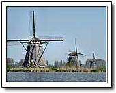

The fujimugs challenge
Today one on my ‘colleagues’ at work kostermw was quite happy with his 24th place at the fujimugs challange. The latest challenge had the theme “3”. Be it abstract, still life, landscape, architectural, portrait or whatever, let your entry creatively shout out THREE!”. He submitted this image on the left.
The fuji mug chalange is quite nice as you can learn a lot about photography. There are loads amatures and professional photographers so there always one person worse then you are. Its quite nice to see how people criticize photos so you can really improve.
My only disappointment is that the challenge is only open to Fuji users. So I have to fake my Coolpix 5700 exif tags to be able to compete with them :(. Or I should start my own Nikon Challenge!
Did I hear anyone volunteer … ?
XHTML, CSS, RSS feeds. Powered by Movable Type. Hosted @Home with a domain by hostway.
Comments
Eh, OK, I was proud. But that doesn't mean the whole world needs to know it ;-)